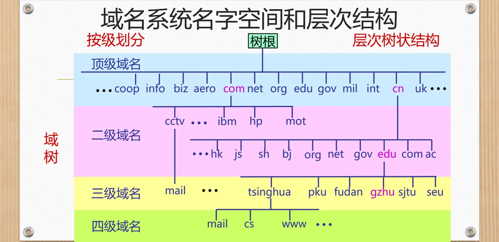
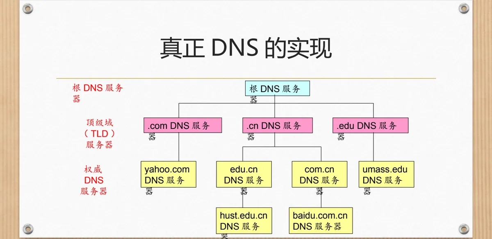
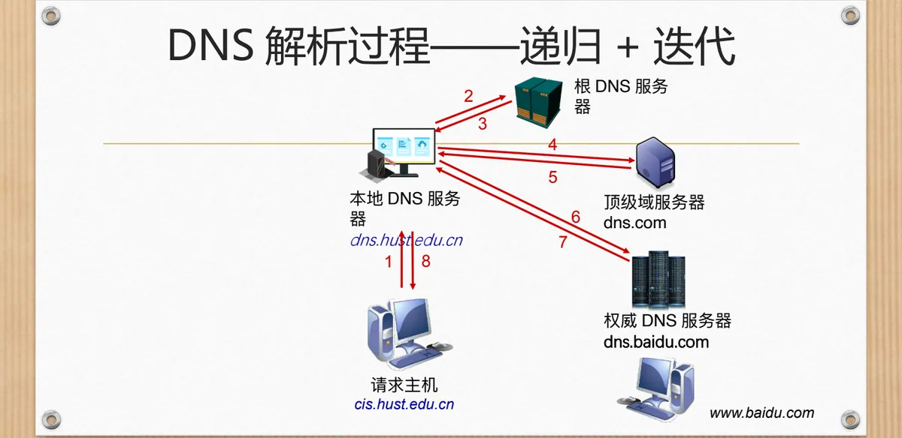
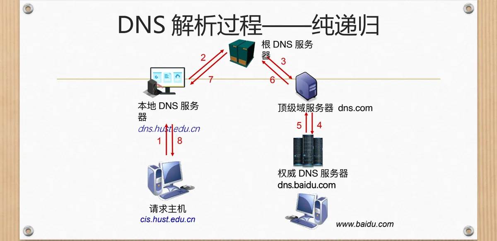
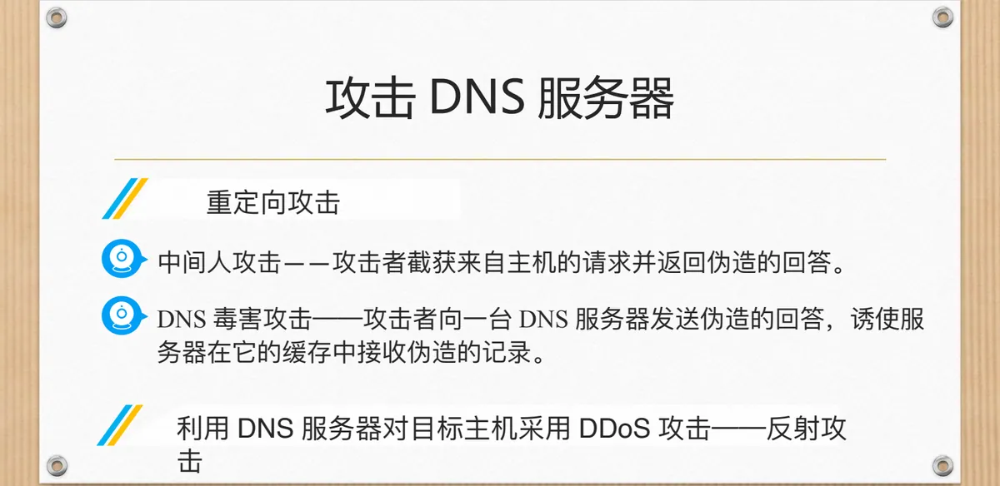

计算机通信与网络 · 第二版讲义 · 第 3 章 网络服务及应用
3.7 域名解析服务（DNS）
在浏览器里敲下一个网址，网络真正认识的却是一串 IP 地址，把域名翻译成 IP 地址的正是域名系统 DNS（Domain Name System）——它不直接和用户打交道，却是因特网的核心功能。本节先说明 DNS 的由来，再讲域名的层次结构、四类域名服务器、递归与迭代两种解析过程、缓存与资源记录，最后看它为什么会成为攻击的目标。
1. 为什么需要域名系统
人类社会里我们记的是姓名，而不是身份证号。域名（Domain Name）是网络社会里的姓名，给人看、便于记忆；MAC 地址、IP 地址这类数字标识则像身份证号，机器认得出，人记不住。
DNS 有四个特点：它不直接和用户打交道，却是因特网的核心功能；它是一个分布式数据库，由很多 DNS 服务器按层次结构组织起来，这正是它区别于「一台服务器包办」的地方；它运行在端到端系统上，使用 UDP 协议、53 号端口传输报文（见 3.2 节），因此是应用层协议；它以客户—服务器（C/S）模式工作，发出查询的是客户，回答查询的是服务器（第一版讲义 6.2 客户—服务器方式和对等方式）。
2. 一次最简单的 DNS 解析过程
先用一次最简单的解析认清各个角色。主机要在浏览器里打开 www.hust.edu.cn/index.html，过程只有五步：
- 浏览器从网址中取出主机名 www.hust.edu.cn，交给本机的 DNS 客户机；
- DNS 客户机向 DNS 服务器发送包含该域名的查询请求报文；
- DNS 服务器返回响应报文，其中含有对应的 IP 地址 202.114.0.245；
- DNS 客户机把获得的 IP 地址交给浏览器；
- 浏览器向该 IP 地址所在的 Web 服务器发起 TCP 连接（见 3.3 节），再按 3.4 节万维网的方式取回页面。
其中属于域名解析的是中间三步：客户机发问、服务器作答、把结果交回；取回网页是万维网的事。
3. 从单台服务器到层次树状的名字空间
最省事的想法是只放一台 DNS 服务器，但它会同时带来四个问题：
- 单点故障：服务器一旦崩溃，整个因特网都受影响；
- 数据流通量：全球的查询涌向同一处，服务器不堪重负；
- 远程的集中式数据库：查询跨越很远的距离，带来严重的延时；
- 维护量巨大：服务器不得不拼命更新，才能跟上因特网上主机的增删。
可行的办法是把名字按级划分，组织成一棵层次树状结构的域树：树根在最上面，往下依次是顶级、二级、三级、四级域名，越往右级别越高，越往左越具体——例如 www.tsinghua.edu.cn 中，cn 是顶级域名，edu 是二级域名，tsinghua 是三级域名，www 是四级域名。

这样组织出来的名字就是域名，它由若干分量组成，分量之间用小数点「.」隔开，总长不超过 255 个字符，每个分量不超过 63 个字符，点的个数至少为一个。书写时把级别低的分量放在左边，形如「… .三级域名.二级域名.顶级域名」；点对应的英文单词是 dot，也可以读作 point。
4. 顶级域名 TLD
域树的最上面一级是顶级域名 TLD（Top Level Domain），它分为三类，见表 1。
| 类别 | 说明 | 举例 |
|---|---|---|
| 国家或地区顶级域 nTLD，也记为 ccTLD（cc 表示 country code） | 每个国家或地区一个，目前有 300 多个 | .cn 表示中国，.us 表示美国，.uk 表示英国 |
| 基础设施域 .arpa（Address and Routing Parameter Area） | 专用于 Internet 基础设施目的 | 二级域有 ip6.arpa、iris.arpa、in-addr.arpa、uri.arpa、urn.arpa、home.arpa、as112.arpa、in-addr-servers.arpa、ipv4only.arpa 等 |
| 通用顶级域 gTLD | 早期规定了 20 个；2011 年批准新通用顶级域名（New Generic Top-level Domain，New gTLD），截至 2020 年已注册有 1200 多个 | 见表 2 |
通用顶级域名最贴近普通用户，其用途在早期就已逐一定下，见表 2。
| 域名 | 用途 |
|---|---|
| .com | 公司企业（commerce） |
| .net | 网络服务机构，例如 NIC 和 NOC（network） |
| .org | 非赢利性组织（organization） |
| .edu | 教育机构（美国专用）（education） |
| .gov | 政府部门（美国专用）（government） |
| .mil | 军事部门（美国专用）（military） |
| .int | 政府间国际合约建立的国际性组织（international） |
| .mobi | 提供移动产品和服务的用户和供应商（mobile） |
| .aero | 航空运输企业 |
| .biz | 商业（business） |
| .cat | （西班牙）加泰罗尼亚语言和文化团体 |
| .coop | 合作团体 |
| .info | 适用于各种情况 |
| .jobs | 人力资源管理者 |
| .museum | 博物馆 |
| .name | 个人 |
| .pro | 有资质的专业人员及其实体，例如会计、律师和医师等自由职业者 |
| .tel | 商业和个人公布其联系方式 |
| .travel | 旅游业实体 |
名单并没有停在早期那 20 个上。2012 年开始，公司名可以作为新的顶级域名（18 万美元），也可以注册 .中国、.公司、.网络 等顶级域名，这类多语种域名的国际标准是 RFC 3454、RFC 3490、RFC 3491、RFC 3492。
5. 我国的二级域名与域名的管理
顶级域名之下是二级域名。以国家顶级域名 .cn 为例，它下面的二级域名分三类：类别域名 7 个（表 3）、行政区域名 34 个、无类别域名。
| 二级域名 | 含义 |
|---|---|
| .edu.cn | 教育 |
| .gov.cn | 政府 |
| .org.cn | 非营利组织 |
| .net.cn | 网络服务 |
| .com.cn | 工商金融等企业 |
| .ac.cn | 科研 |
| .mil.cn | 国防机构 |
行政区域名取省、直辖市、自治区、特区等名称，每个写成两个字母，例如北京 bj、河北 he；无类别域名直接注册在 .cn 之下，例如 www.google.cn、www.tianya.cn。
域名由域名管理机构分级负责注册：因特网的域名管理机构是 ICANN（Internet Corporation for Assigned Names and Numbers，网址 www.icann.org）；ccTLD 下的二级域名由该国自行确定；三级域名的注册由其所属的二级域名机构负责，以此类推。在我国，.edu.cn 下的三级域名注册由 CERNET（中国教育和科研计算机网）负责，其它二级域名的注册由 CNNIC（中国互联网络信息中心）负责。
6. 域名服务器的层次结构
名字空间分了层，回答查询的服务器也按同样的层次组织起来：最上面是根 DNS 服务器，往下是顶级域服务器（.com、.cn、.edu 等），再往下是各组织的权威 DNS 服务器（如 hust.edu.cn、baidu.com.cn 等）。

根 DNS 服务器共有 13 个，用字母 a 到 m 编号，由不同机构在世界各地分散运营，见表 4。
| 代号 | 运营机构 | 所在地 |
|---|---|---|
| a | NSI | Herndon, VA |
| b | USC-ISI | Marina del Rey, CA |
| c | PSInet | Herndon, VA |
| d | U Maryland | College Park, MD |
| e | NASA | Mt View, CA |
| f | Internet Software C. | Palo Alto, CA |
| g | DISA | Vienna, VA |
| h | ARL | Aberdeen, MD |
| i | NORDUnet | Stockholm |
| j | NSI（TBD） | Herndon, VA |
| k | RIPE | London |
| l | ICANN | Marina del Rey, CA |
| m | WIDE | Tokyo |
顶级域 DNS 服务器负责顶级域名和所有国家的顶级域名的解析工作，例如 com、org、net、gov、uk、cn、jp 等；它们并不都由同一家机构维护：edu 顶级域服务器由 EDUCAUSE 维护，com 顶级域服务器由 VeriSign 维护。
权威 DNS 服务器属于某个组织，为该组织的服务器提供权威的域名到 IP 地址映射服务，例如 Web 服务器和 mail 服务器，一般由所属组织或者服务提供商负责维护。
本地 DNS 服务器的行为像一个代理：它接收本网内主机的查询，再向域名的层次体系中进一步查询。它并不属于 DNS 层次结构中的一层，却是每次查询的入口：主机做域名查询时，请求首先被发送到本地域名服务器；每个网络服务提供商都会提供一个，所以它也常被称为「默认 DNS 服务器」。
7. 域名解析过程：递归与迭代
把这几类服务器串起来就是一次完整的解析，图 3 是递归加迭代的过程。

两种查询方式的区别在于「谁继续往下问」。递归查询要求被查询的服务器代为查到底，把最终结果返回；迭代查询只回答「下一步该问谁」，不代为继续查询。图 3 中，主机与本地 DNS 服务器之间的一问一答是递归查询（第 1、8 步）；本地 DNS 服务器与根、顶级域、权威服务器之间的往来都是迭代查询（第 2 至 7 步）：根服务器只告诉它该去问哪个顶级域服务器，最终由权威服务器给出 www.baidu.com 的 IP 地址。

图 4 是同一条链路的另一种走法：8 个步骤全部是递归查询，由各级服务器依次代替下一级去问，结果逐级原路返回。这样请求主机最省事，繁重的逐级查询却被压在根、顶级域这些上层服务器身上，所以实际的因特网采用图 3 的组合。
8. DNS 缓存
如果每次查询都要从根服务器问起，根服务器很快会被压垮。解决办法是缓存：任何域名服务器一旦得知了某个映射就把它保存下来，下次再有人问同一个名字，直接用缓存作答；缓存条目不是永久的，经过一定的时间间隔就会过期并被自动消除。
缓存对上层的减负很直接：顶级域 DNS 服务器的地址通常被缓存在本地 DNS 服务器中，大量查询在本地就能得到答案，这样就减少了根 DNS 的负载。
9. DNS 可提供的服务
DNS 能做的事情不止「域名换地址」一件，它至少提供三类服务：
- 域名到 IP 地址的转换：最基本的一项，把用户输入的域名换成机器使用的 IP 地址；
- 主机／邮件服务器别名：为不好记的规范主机名或邮件服务器名提供一个易记的别名，例如 www.hotmail.com 就是 www.hotmail.aate.nsatc.net 的别名（邮件服务见 3.6 节）；
- 负载均衡：让一个域名对应多个 IP 地址，DNS 服务器在多个 IP 之间轮转，把访问分散到多台服务器上。
10. DNS 资源记录的格式
这些服务最终都要靠资源记录 RR（Resource Record）表达，一条 RR 写成一个四元组：RR 格式 (name, value, type, ttl)。name 与 value 的含义随 type 而变，ttl 则决定这条记录能被缓存多久，正是「条目过期自动消除」的依据。表 5 是四种常见的记录类型。
| 类型 | name | value |
|---|---|---|
| Type=A | 主机名 | IP 地址 |
| Type=NS | 域，如 foo.com | 该域权威域名服务器的主机名 |
| Type=CNAME | 别名，如 www.ibm.com | 真名，如 servereast.backup2.ibm.com |
| Type=MX | — | 与 name 相关的邮件服务器域名 |
11. 针对 DNS 服务器的攻击
DNS 是因特网的核心功能，打掉它就让大量用户上不了网，因此它一直是攻击重点。针对 DNS 服务器的分布式拒绝服务 DDoS（Distributed Denial of Service）攻击有两种常见形式：用 DNS 请求报文洪泛攻击顶级域 DNS 服务器，用 ICMP Ping 洪泛攻击根 DNS 服务器。后者难以成功，因为根服务器通常配备分组过滤器；前者则难以过滤。此外要注意，大多数本地 DNS 服务器都缓存了顶级域 DNS 服务器的地址。
更麻烦的是，DNS 服务器还会被利用去攻击别人，这就是反射攻击：攻击者向 DNS 服务器发出查询，却把请求伪装成来自目标主机，服务器给出的回答便全部涌向目标主机。

同类手法还有重定向攻击、DNS 毒害攻击与中间人攻击：毒害攻击是向 DNS 服务器发送伪造的回答，诱使服务器把伪造记录收进缓存；中间人攻击是截获来自主机的请求，再返回伪造的回答。
本节小结
- DNS 把域名映射为 IP 地址，把名字翻译成机器认得的地址，不直接和用户打交道却是因特网的核心功能；它是运行在端到端系统上、使用 UDP 53 号端口的应用层协议，以 C/S 模式工作（与第一版讲义 6.4 域名系统 DNS 同题）；
- 名字空间按级划分成层次树状结构：顶级域名（国家或地区顶级域 nTLD／ccTLD、基础设施域 .arpa、通用顶级域 gTLD）、二级、三级、四级域名；域名各分量用点隔开，总长不超过 255 个字符，每个分量不超过 63 个字符；
- 回答查询的服务器同样分层：根（13 个，a 至 m）、顶级域、权威三级构成层次结构，本地 DNS 服务器严格讲不属于其中一层，却是每次查询的入口；主机到本地服务器用递归查询，本地服务器到各级服务器用迭代查询，缓存则让大量查询不必每次从根问起；
- 域名到 IP 地址的转换、主机／邮件服务器别名与负载均衡，都由资源记录表达，常见类型有 A、NS、CNAME、MX；DNS 既是 DDoS 攻击的目标（洪泛顶级域服务器、ICMP Ping 洪泛根服务器），也会被用于反射攻击，此外还有重定向攻击、毒害攻击与中间人攻击。